王红元
微博：coderwhy
微信：372623326


 什么是Vue CLI
什么是Vue CLI
如果你只是简单写几个Vue的Demo程序, 那么你不需要Vue CLI.
如果你在开发大型项目, 那么你需要, 并且必然需要使用Vue CLI
使用Vue.js开发大型应用时，我们需要考虑代码目录结构、项目结构和部署、热加载、代码单元测试等事情。
如果每个项目都要手动完成这些工作，那无疑效率比较低效，所以通常我们会使用一些脚手架工具来帮助完成
这些事情。
CLI是Command-Line Interface, 翻译为命令行界面, 但是俗称脚手架.
Vue CLI是一个官方发布 vue.js 项目脚手架
使用 vue-cli 可以快速搭建Vue开发环境以及对应的webpack配置.

脚手架长什么样子?

 Vue CLI使用前提 - Node
Vue CLI使用前提 - Node
cnpm安装
由于国内直接使用 npm 的官方镜像是非常慢的，这里推荐使用
淘宝 NPM 镜像。
你可以使用淘宝定制的 cnpm (gzip 压缩支持) 命令行工具代替默
认的 npm:
npm install -g cnpm --registry=https://registry.npm.taobao.org
这样就可以使用 cnpm 命令来安装模块了：
cnpm install [name]
可以直接在官方网站中下载安装.
默认情况下自动安装Node和NPM
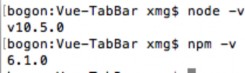
Node环境要求8.9以上或者更高版本
NPM的全称是Node Package Manager
是一个NodeJS包管理和分发工具，已经成为了非官方的发布Node模块（包）的标准。

后续我们会经常使用NPM来安装一些开发过程中依赖包.

 Vue CLI使用前提 - Webpack
Vue CLI使用前提 - Webpack
Vue.js官方脚手架工具就使用了webpack模板
对所有的资源会压缩等优化操作
它在开发过程中提供了一套完整的功能，能够使得我们开发过程中变得高效。
Webpack的全局安装

npm install webpack -g
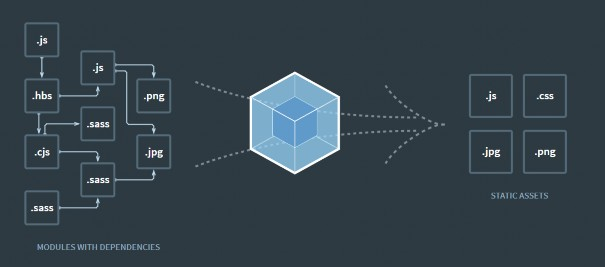

 Vue CLI的使用
Vue CLI的使用
安装Vue脚手架
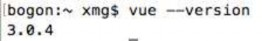
npm install -g @vue/cli
注意：上面安装的是Vue CLI3的版本，如果需要想按照Vue CLI2的方式初始化项目时不可以的。
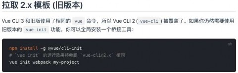
Vue CLI2初始化项目
vue init webpack my-project
Vue CLI3初始化项目

vue create my-project


 Vue CLI2详解
Vue CLI2详解
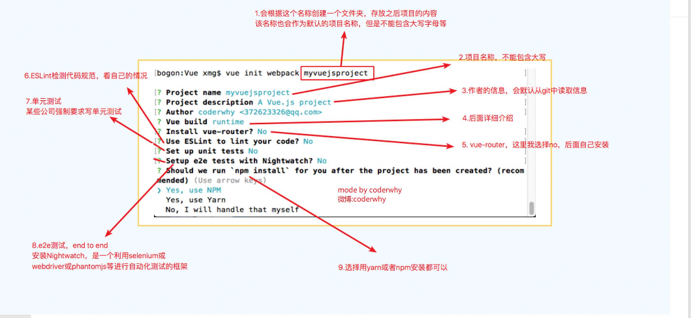


 目录结构详解
目录结构详解
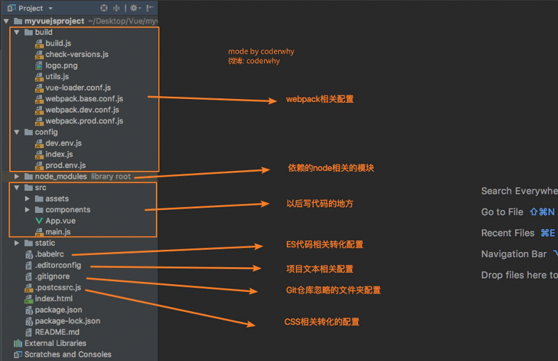

 Runtime-Compiler和Runtime-only的区别
Runtime-Compiler和Runtime-only的区别
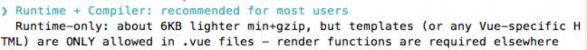
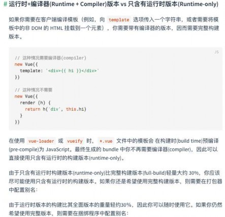
简单总结
如果在之后的开发中，你依然使用template，就需要选
择Runtime-Compiler

如果你之后的开发中，使用的是.vue文件夹开发，那么
可以选择Runtime-only

 render和template
render和template
Runtime-Compiler 和 Runtime-only
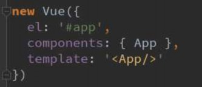 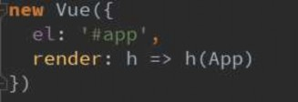
为什么存在这样的差异呢？
我们需要先理解Vue应用程序是如何运行起来的。
Vue中的模板如何最终渲染成真实DOM。

我们来看下面的一幅图。


 Vue程序运行过程
Vue程序运行过程
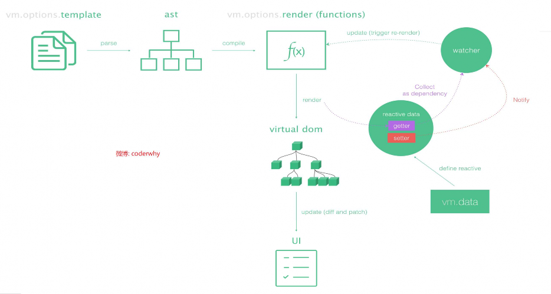


 render函数的使用
render函数的使用
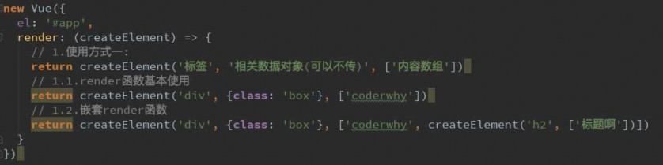
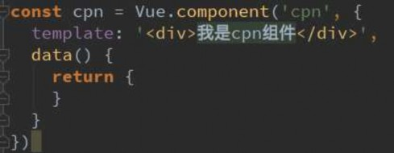 
npm run build
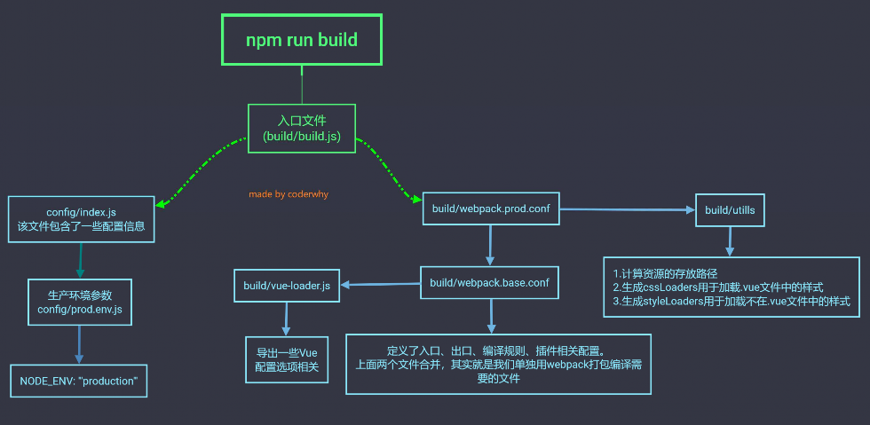

npm run dev
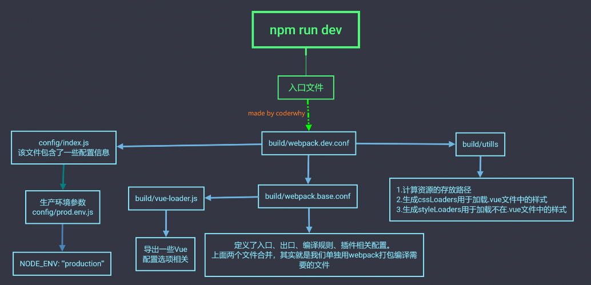


 修改配置：webpack.base.conf.js起别名
修改配置：webpack.base.conf.js起别名
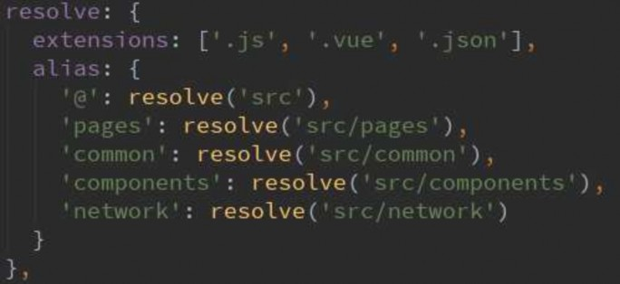

 认识Vue CLI3
认识Vue CLI3
今年8月份刚刚发布
vue-cli 3 与 2 版本有很大区别
vue-cli 3 是基于 webpack 4 打造，vue-cli 2 还是 webapck 3
vue-cli 3 的设计原则是“0配置”，移除的配置文件根目录下的，build和config等目录
vue-cli 3 提供了 vue ui 命令，提供了可视化配置，更加人性化

移除了static文件夹，新增了public文件夹，并且index.html移动到public中


 Vue CLI3
Vue CLI3
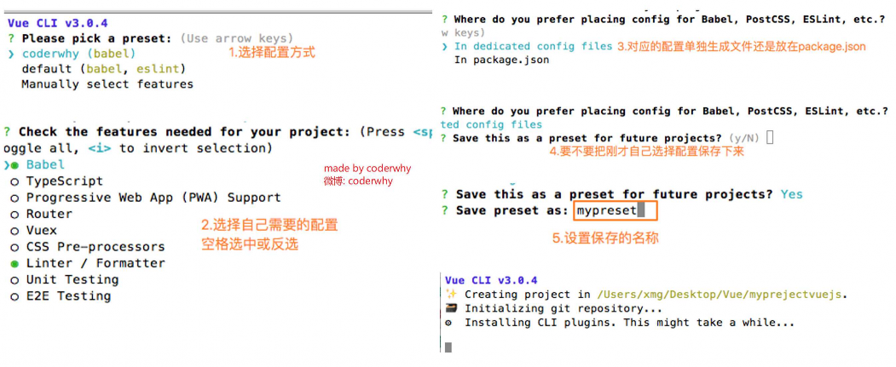


 目录结构详解
目录结构详解
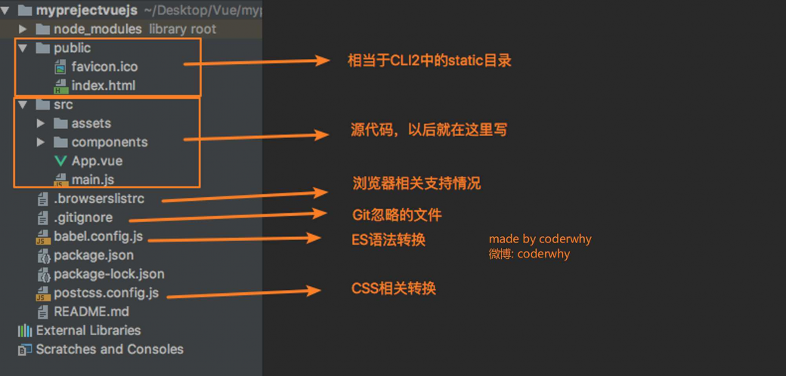


 配置去哪里了？
配置去哪里了？
UI方面的配置
启动配置服务器：vue ui
一大堆配置文件去哪里了？
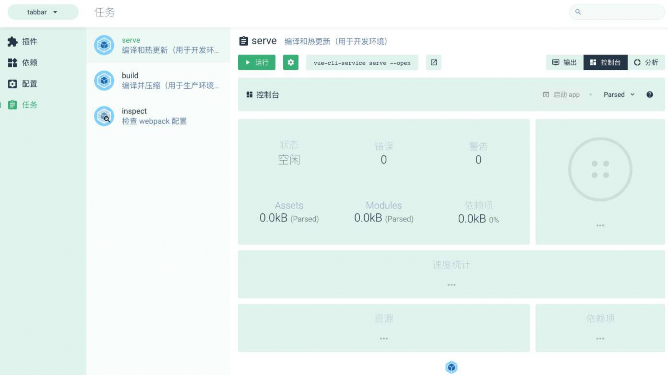 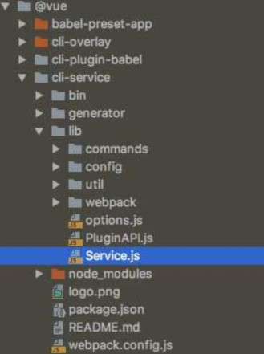


 自定义配置：起别名
自定义配置：起别名
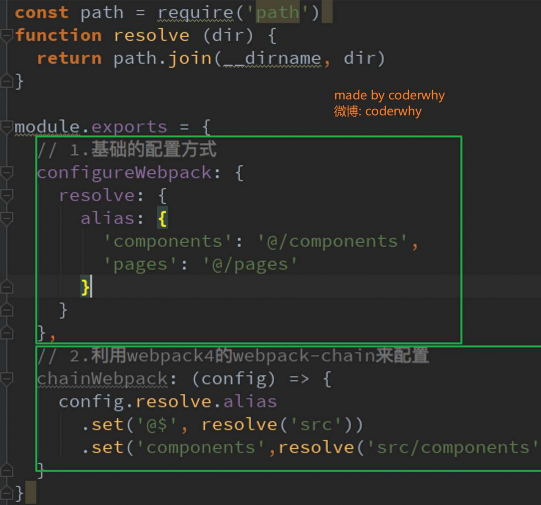